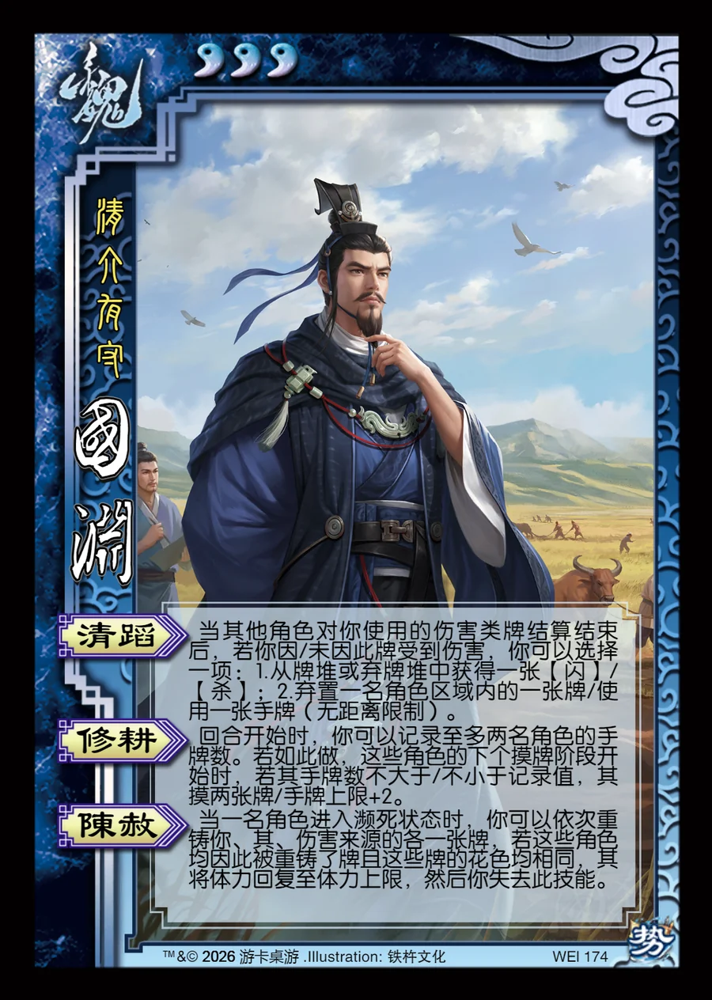

点击卡面查看大图
魏
国渊
♥3清介有守
清蹈
当其他角色对你使用的伤害类牌结算结束后，若你因/未因此牌受到伤害，你可以选择一项：1.从牌堆或弃牌堆中获得一张【闪】/【杀】；2.弃置一名角色区域内的一张牌/使用一张手牌（无距离限制）。
修耕
回合开始时，你可以记录至多两名角色的手牌数。若如此做，这些角色的下个摸牌阶段开始时，若其手牌数不大于/不小于记录值，其摸两张牌/手牌上限+2。
陈赦
当一名角色进入濒死状态时，你可以依次重铸你、其、伤害来源的各一张牌，若这些角色均因此被重铸了牌且这些牌的花色均相同，其将体力回复至体力上限，然后你失去此技能。